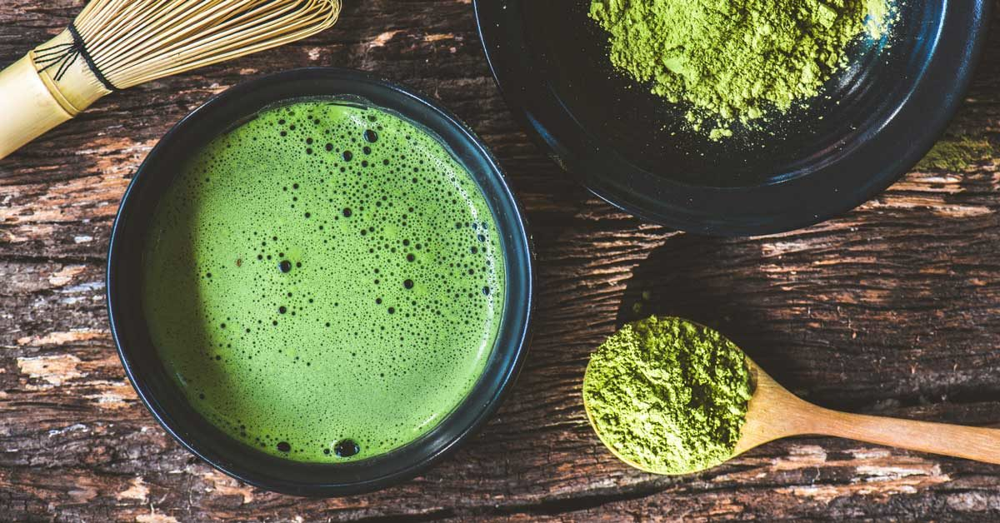

Matcha-latte

JA matcha latte is a tea latte made with green tea powder and steamed milk. Matcha replaces the espresso in a traditional cafe latte, giving it a brilliant green color and lightly bitter flavor.
Ingredients
- 1 1/2 teaspoons matcha powder
- 1 tablespoon hot water
- 2 teaspoons honey, or to taste
- 3/4 cup hot milk
Steps
- Shift the matcha powder into a cup.
- Add the water and stir until no lumps remain. Stir in the honey.
- Add the milk and serve.